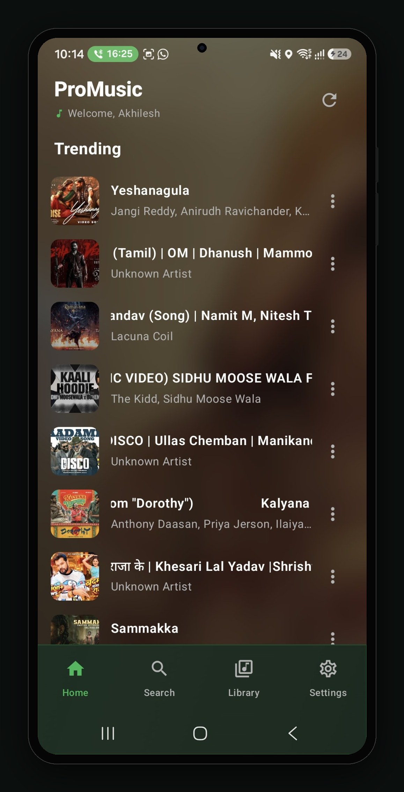
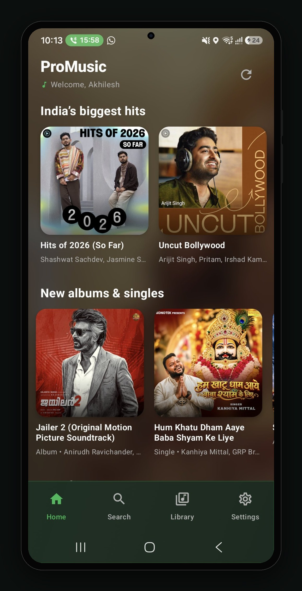
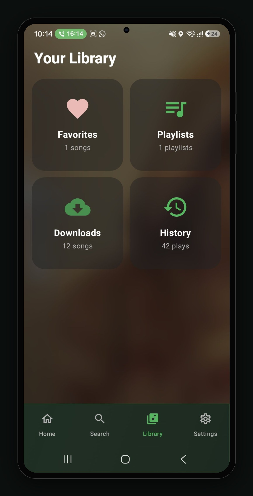
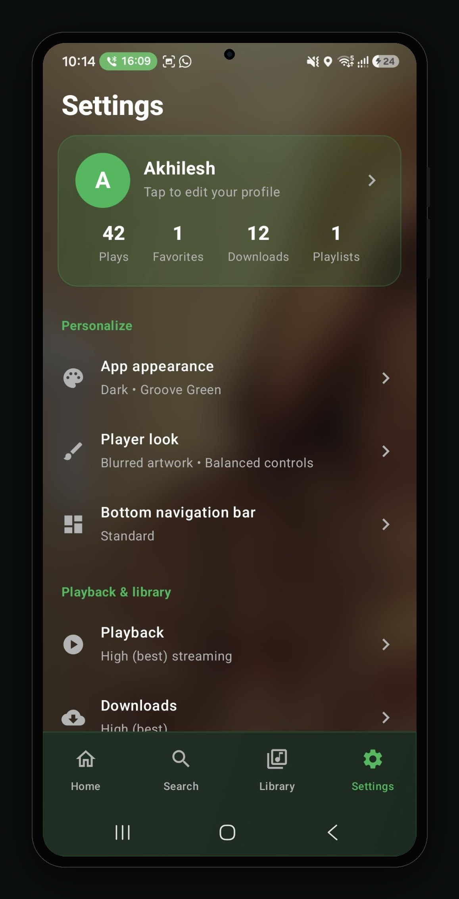

A music app for Android. Trending songs, India's biggest hits, your own library, offline downloads and your listening history — in a dark, simple interface.

These are real screens from the app, shown in a phone frame exactly as they appear on a device.



Everything listed here is in the app today, in version 2.0.
The day's trending songs, with artwork, artist names and quick actions on each track.
Hit playlists plus new albums and singles, from Bollywood to regional music.
Favorites, playlists, downloads and history in one place, with counts at a glance.
Download songs in high quality and listen without an internet connection.
Dark theme with a Groove Green accent, blurred artwork player, balanced controls, standard bottom bar.
High (best) quality for both streaming and downloads.
ProMusic is distributed as an APK while it is not on the Play Store yet.
Use the download button on this page to get ProMusic v2.0.
When asked, allow "Install unknown apps" for your browser. This is standard for APK installs.
Open the app, check Trending, and start building your library. Requires Android 8.0+.
Direct APK download. 8.4 MB, Android 8.0 or newer.